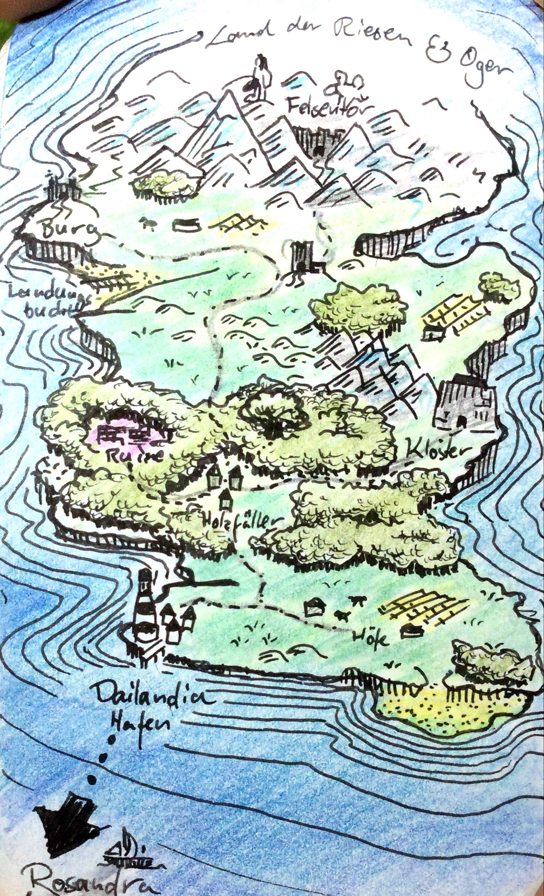

Dailandia
Autarke Insel. Liegt östlich vom Festland, nordöstlich von Rosandra.
Dai ist der Schutzpatron der Menschen, die sich dort niederlassen, und Namensgeber der Insel.
Geschichte
Bevölkerung der bekannten Insel durch Nordmänner.
- Jahr 0–20: Vertreibung der Riesen in den Norden.
- Jahr 250: Zeit von Zacharias dem Schlächter.
- Jahr 280: Die Große Panik setzt ein. Die östlichen Meere werden unbefahrbar. Der Wald im Zentrum wird von Monstern heimgesucht und unpassierbar für die Bewohner aus dem Süden. Nur noch eine Verbindung zum Festland bleibt bestehen.
-
Jahr 282: Die nördliche Hälfte ist wieder sicher. Allerdings sind alle Menschen verschwunden, inklusive Zacharias. Das Ki des Landes wird schwächer und ist kaum nutzbar für die Menschen. Grund dafür ist die Einkapselung des Bösen durch Dai in die Unterwelt.
- Ohne Ki wird das Volk schwach und die Ernten mager.
- Jahr 300: Die Insel wird über Jahre von Plünderern aus dem Nordwesten geschliffen, denen die wenigen verbliebenen Bewohner Dailandias wenig entgegensetzen können.
- Jahr 350: Beginnende Unterjochung der Menschen durch einen Amazonenstamm.
- Jahr 700: Erscheinen der Anderen 3.
- Jahr 701: Vernichtung der Amazonen durch die Anderen 3.
- Jahr 705: Die Anderen 3 verschwinden.
- Jahr 725: Erwachen der Monster und Befreiung Dais durch Kutaros Hand.
- Jahr 730: Vollständige Vernichtung der Monster aus der Unterwelt.
- Jahr 800: Der Ki-Fluss des Landes ist geheilt.
- Jahr 1200: Das Schlachtschiff der Erbauer wird hinter dem
Orte
Neben verstreuten Gehöften und Verstecken der Zigeuner gibt es folgende bedeutende Orte:
- Hafenstadt im Süden
- Dorf der Holzfäller im Zentrum
- Kloster im Osten
- Felsentor im hohen Norden, das die Riesen und Oger einsperrt
- Burg im kühleren Nordwesten. Erbaut durch den Avatar. Späterer Sitz der Amazonen.
Karte von Dailandia um 500
Die Karte zeigt Dailandia nach der Großen Panik. Der Sitz von Zacharias liegt in Ruinen und der Norden ist bloß spärlich besiedelt.

{kind=link}
{kind=link}